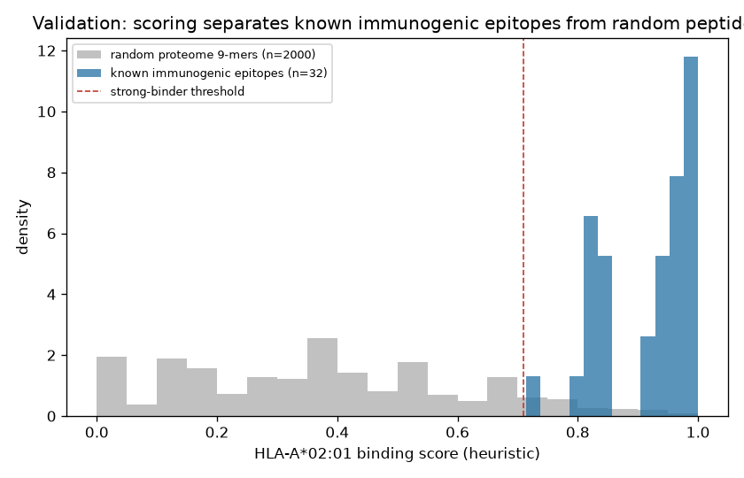

DS4300 · NoSQL R&D Project · Data Science Application
In-Silico Cancer
Vaccine Designer
Simulating the personalized neoantigen vaccine pipeline — with a
vector database at its core.
Nathaniel Estes · [Groupmate Name]
(authors in alphabetical order by last name — fill in)
01 / 05
Motivation
How is a cancer vaccine actually designed?
- At Yale, Dr. Mark Mamula's lab built a cancer vaccine for dogs targeting
EGFR/HER2 — a search-and-rescue dog, Hunter, now shows no evidence of cancer.
- Human personalized neoantigen / mRNA vaccines follow the same idea: teach the immune
system to see proteins that are abnormal only in tumor cells.
- But how is the target chosen? We simulate the computational pipeline that turns a
tumor's mutations into a ranked vaccine — and use a NoSQL vector database as the ranking engine.
- Significance: cancer immunotherapy; originality: ranking neoantigens is a similarity search,
something a relational database cannot express.
02 / 05
Methods
An ETL pipeline with a vector database at its core
- Real inputs: 4 proteins from UniProt · 16 documented hotspot mutations ·
32 published HLA-A*02:01 immunogenic epitopes.
- Extract→Transform: mutate → slice mutation-spanning 9-mers → embed each as a
47-d physicochemical vector.
- Load/Query (ChromaDB): rank each candidate by cosine similarity to known immunogenic
epitopes — a nearest-neighbor query.
- Honest scope: binding is a transparent HLA-A*02:01 heuristic, not NetMHCpan.
03 / 05
Results & Validation
144 candidates → a validated scoring method

Binding heuristic separates 32 known immunogenic
epitopes from 2,000 random proteome 9-mers.
144
candidates (16 mutations)
- Validation: known epitopes mean binding 0.92
(100% ≥ threshold) vs random 0.38 (10%).
- Top hit: HER2 S310F GFCTLVCPL →
nearest known GLCTLVAML (EBV), composite 0.77.
- Runtime ~0.1 s on CPU, no GPU; fully reproducible.
04 / 05
The designed vaccine & conclusions
An 8-epitope, 93-aa string-of-beads construct
GFCTLVCPLAAYSTVQLIMQLAAYLVVVGAVGVAAYVLSSGAFGTAAY…
Takeaways
- A vector DB is a natural fit — ranking neoantigens is a similarity search.
- EGFR & HER2 epitopes echo the Yale canine vaccine's targets.
- Transparent, fast, reproducible — no GPU, no black box.
Limitations (honest)
- Heuristic binding, not NetMHCpan; one HLA allele (A*02:01).
- Physicochemical (not learned) embeddings.
- No expression filter or lab validation.
05 / 05